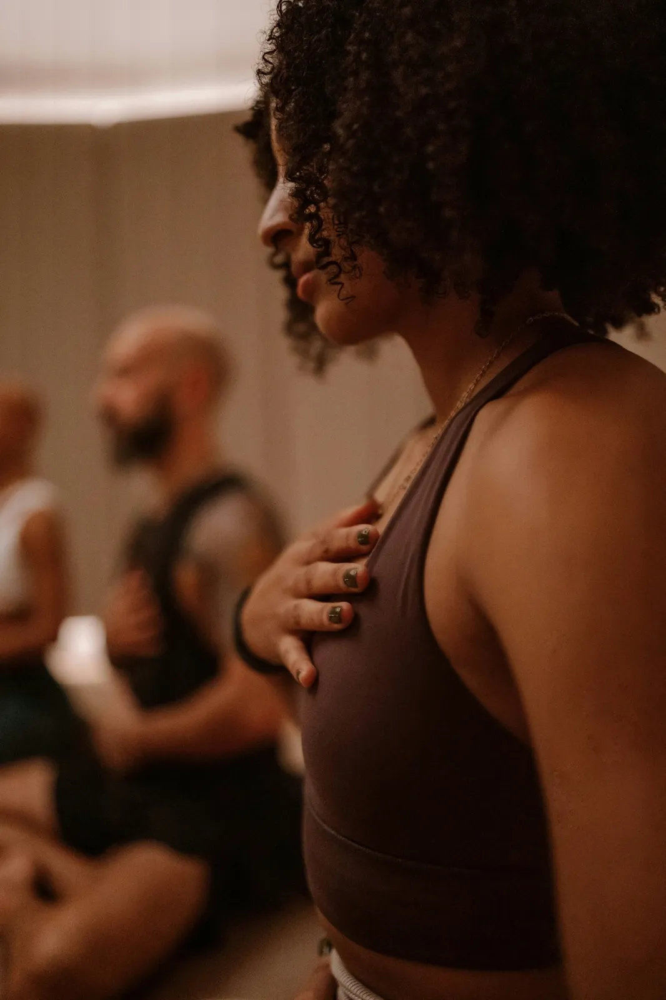
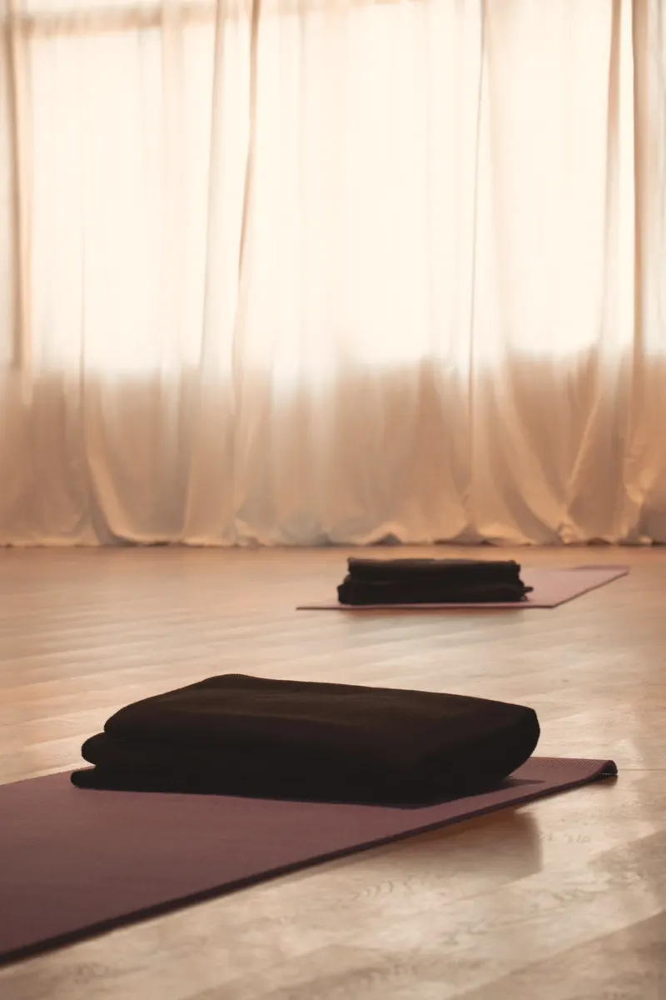

A essência do que fazemos
Cada sessão parte de observar como respiras, o que sentes no corpo e como reages às situações do dia a dia.
Usamos exercícios respiratórios, movimento e atenção às sensações, dando tempo para integrar o que surge, a sós ou em partilha. Escolhemos as práticas de acordo com o que procuras, a tua experiência e os teus limites.
O trabalho organiza-se em três dimensões: Respirar, Sentir e Explorar. Podem combinar-se. Não são etapas obrigatórias nem serviços separados.
RESPIRAR
Como respiras quando estás sob pressão? E quando queres descansar?
Observamos os teus hábitos respiratórios e experimentamos exercícios simples para ajustar a respiração de forma confortável.
Estas práticas podem ajudar-te a lidar com a pressão, manter a atenção e voltar à calma depois de momentos exigentes.
Não há uma forma de respirar que sirva para todos. O importante é perceber como respiras e o que te é útil.

SENTIR
Nem sempre reparamos no que sentimos no corpo. Podemos passar o dia com os ombros tensos, a mandíbula contraída ou a respiração presa.
A partir da respiração e do movimento, reconhecemos estas respostas e percebemos como se ligam às emoções.
Podemos trabalhar a postura, o apoio no chão, o movimento livre ou orientado e a expressão emocional. Cada pessoa decide até onde quer ir.
Não é preciso provocar emoções. Partilhas só o que quiseres.

EXPLORAR
Às vezes queremos perceber melhor as nossas reações, os pensamentos que se repetem ou a forma como lidamos com emoções difíceis.
Usamos práticas de respiração e movimento mais ativas, como a respiração conectada ou a bioenergética, que ajudam a ir além do controlo habitual da mente.
Podem surgir estados de consciência mais amplos, emoções fortes ou experiências com significado pessoal ou espiritual. Não procuramos provocá-los. No fim, há tempo para os sentir e integrar.
Escolhemos as práticas de acordo com a tua preparação e com o que é adequado para ti.
Da sessão para o dia a dia
Uma sessão é um espaço para experimentar e observar como respiras, como o corpo reage e como te sentes.
O objetivo é levar essa atenção para o dia a dia: reparar mais cedo na tensão, nas mudanças de estado e na forma como reages ao stress.
Não é uma mudança que acontece numa sessão. Constrói-se com prática e continuidade.

Vem experimentar.
Agenda uma conversa curta e gratuita e descobre que sessão faz sentido para ti.
Agendar conversa gratuita